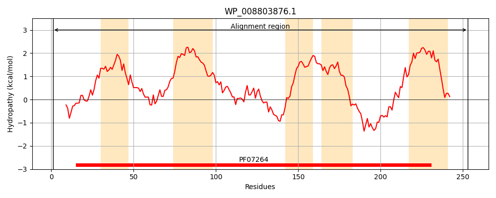
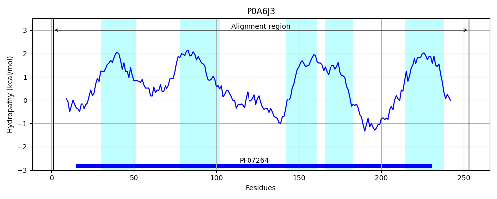
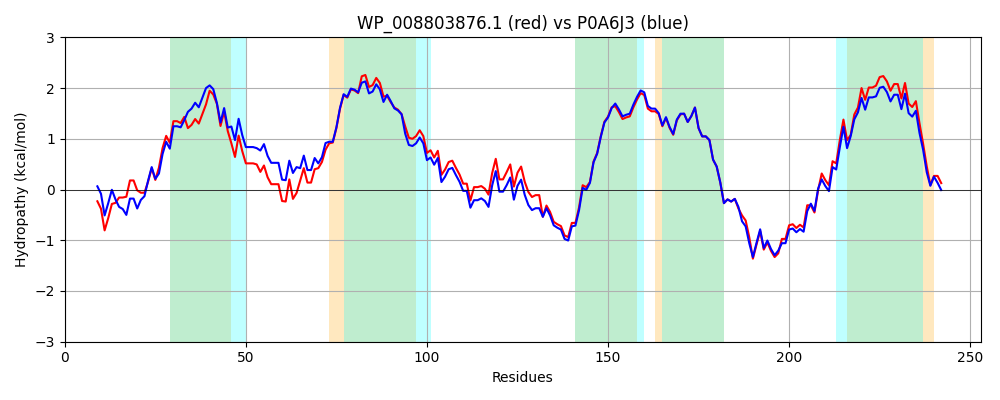

Hit Accession: P0A6J3
Hit TCID: 2.A.121.1.1
Hit Description: gnl|BL_ORD_ID|8602 gnl|TC-DB|P0A6J3|2.A.121.1.1 Protein cysZ - Escherichia coli.
Mach Len: 253
e:0.000000
Query TMS Count : 5
Hit TMS Count: 5
TMS-Overlap Score: 4.850000
Predicted Substrates:CHEBI:9335;sulfate
BLAST Alignment:
Score: 1217 , Bit scores: 473 bits, E-value: 7.5e-172, Alignment length: 253, Percentage identity: 84
Query: 1 MVSSSAPTPRSGVYYFSQGWKLIGLPGIRRYVFLPLLVNVLLMGGAFWWLFTRLDSWIPSLMSHVPDWLQWLNYLLWPVVVLSILLVFGYFFSTIANWIAAPFSGLLAEQLEARLTGATPPDVGVFGIMKDIPRIMKREWQKLAWYLPRAIVLLLLYFIPGVGQTVAPVLWFLFSAWMLAIQYCDYPFDNHKVPFRTMREALRSRKVMNMQFGALTSLFTMIPVLNLVILPVAICGATAMWVDCYRDKHAVWK 253
MVSS PRSG YYF+QGWKL+ PGIRR+V LPLLVN+LLMGGAFWWLFT+LD WIP+LMS+VPDWLQWL+YLLWP+ V+S+LLVFGYFFSTIANWIAAPF+GLLAEQLEARLTGATPPD G+FGIMKD+PRIMKREWQK AWYLPRAIVLL+LYFIPG+GQTVAPVLWFLFSAWMLAIQYCDYPFDNHKVPF+ MR ALR+RK+ NMQFGALTSLFTMIP+LNL I+PVA+CGATAMWVDCYRDKHA+W+
Sbjct: 1 MVSSFTSAPRSGFYYFAQGWKLVSQPGIRRFVILPLLVNILLMGGAFWWLFTQLDVWIPTLMSYVPDWLQWLSYLLWPLAVISVLLVFGYFFSTIANWIAAPFNGLLAEQLEARLTGATPPDTGIFGIMKDVPRIMKREWQKFAWYLPRAIVLLILYFIPGIGQTVAPVLWFLFSAWMLAIQYCDYPFDNHKVPFKEMRTALRTRKITNMQFGALTSLFTMIPLLNLFIMPVAVCGATAMWVDCYRDKHAMWR 253 | Protein Hydropathy Plots: |
|---|
|  |  |
Pairwise Alignment-Hydropathy Plot:
|
|---|
|  |